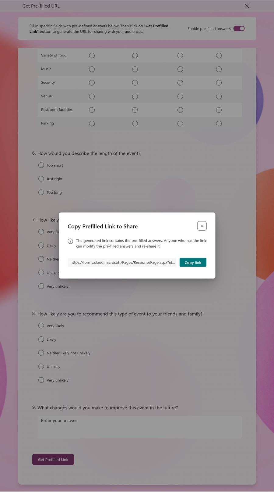
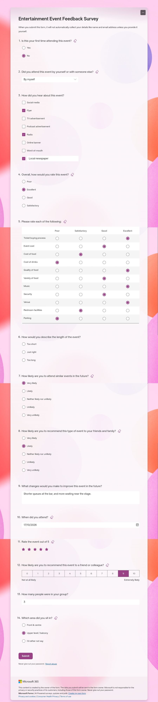
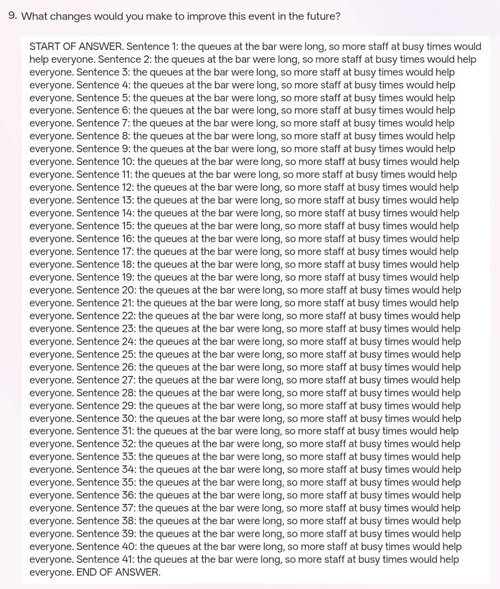

Filling in a whole Microsoft Form at once, with a pre-filled link
For someone who uses a screen reader, a long Microsoft Form is slow going. A common way to cope is to draft the answers with Copilot, then paste them into the form one question at a time: move to Copilot, copy an answer, move back, find the right box, paste, check it landed. It takes a long time, and it's easy to put an answer in the wrong place. I wanted a way to load every answer at once, so the only job left is to check them and press Submit.
Why not an API?
Microsoft Forms has no official API for submitting responses. Microsoft Graph doesn't cover it, and the Power Automate Forms connector only reads responses. The form page itself talks to internal endpoints, but they're undocumented and can change without warning. Submitting on someone's behalf would also skip the step that matters most: them checking the answers.
Pre-filled links
Forms has a built-in feature for this. The form's owner opens the "..." menu, chooses Get Pre-filled URL, switches on Enable pre-filled answers, fills in some answers and copies the link. Anyone who opens that link sees the form with those answers already in place. The form never submits itself.

What's in the link
The link is the normal form address with one extra part per question: the question's ID, an equals sign, and the answer. Question IDs are a letter r followed by 32 characters. One sample link gives you every ID, and after that you can write a link with any answers you like.
https://forms.cloud.microsoft/Pages/ResponsePage.aspx ?id=FORM-ID &r14e5513e…="No" &rea29e5f7…=Shorter queues at the bar…
Each question type writes its answer differently. I made a test form with one of each common type and decoded its link:
| Question type | Answer | In the link |
|---|---|---|
| Text | Shorter queues… | The text as it is |
| Number | 3 | 3 |
| Choice, pick one (and drop-down) | No | "No" |
| Choice, pick several | Radio, Flyer | "[\"Radio\",\"Flyer\"]" |
| "Other" with typed text | Local newspaper | Added to the same list |
| Date | 17/10/2026 | "2026-10-17" |
| Rating (stars) | 5 | 5 |
| Net Promoter Score | 9 | 9 |
| Likert grid | A column per row | Each row's ID with the column's number and hidden ID |
Writing a new link
With the question IDs from the sample, I wrote a new link with different answers for all 14 questions and opened it in a private window. Thirteen filled in correctly, including every row of the grid, the date, the stars and the Net Promoter Score.

The space you can't see
Question 6 stayed blank. While making the test form I'd left a space at the start of one option and at the end of another. On screen, all three options look normal. In the link from Get Pre-filled URL, they don't:
| Option on screen | How Forms stored it |
|---|---|
| Too short | Too short |
| Just right | %C2%A0Just right: a non-breaking space at the start |
| Too long | Too long%C2%A0: a non-breaking space at the end |
Forms saved each stray space as a non-breaking space, a different character that looks exactly like a normal one. A pre-filled answer has to match the option exactly, so my link's plain "Just right" matched nothing. I tested "Too long" three ways:
- ✗
"Too long", no space: blank - ✗
"Too long ", normal space: blank - ✓
"Too long%C2%A0", non-breaking space: filled in
Things to know before you use it
- The owner has to switch it on. With Enable pre-filled answers switched off, the same link opens an empty form. One sample link with dummy answers is enough, and it keeps working: switching pre-filling off and on again doesn't change the form or question IDs.
- A choice answer has to match the option exactly, including capitals and any hidden spaces. A "pick several" question in the sample can have every option ticked, which captures all of them exactly.
- Answers sit in the link, so they're saved in browser history and visible to anyone the link is sent to. Use a private window and send each person their own link.
- Long answers make long links. Every space and comma becomes three characters in the link. A 3,917-character answer, close to the 4,000-character limit of a long-answer box, made a 5,739-character link, and it arrived in full.
- Forms limited to an organisation ask you to sign in, and may show answers from an earlier visit instead of the link's.
- It works for anyone, not only screen reader users. A link with a few defaults filled in, such as a team name, can go to everyone.

A helper for writing the links
Writing these links by hand isn't practical, so I made a small tool with two modes. In basic mode, you paste the sample link and your notes, and the tool gives you a prompt for Copilot or another AI. The AI writes the answers and the link. You paste its reply back, and the tool checks every answer against the form, fixes hidden-space mistakes, and reads the answers back to you question by question. Advanced mode is for typing answers yourself or loading them from a file. It opens on one of four made-up example forms, so you can see how it works without touching a real one.
Try the Microsoft Forms pre-filled link builder → It opens on an example form, so you can try every step before using your own.